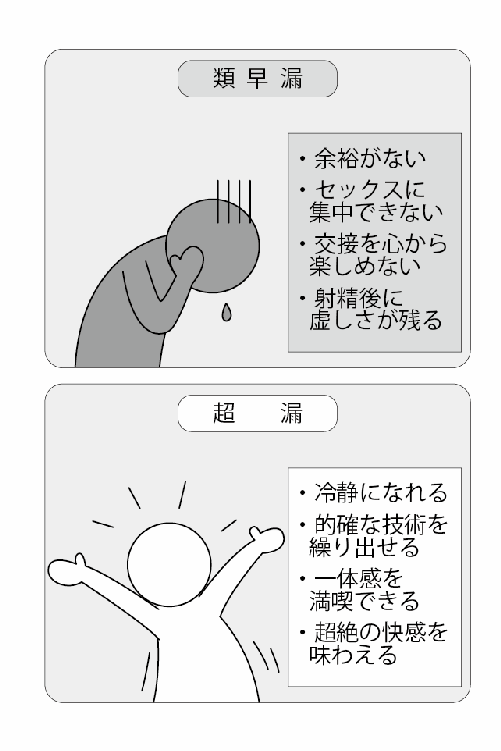
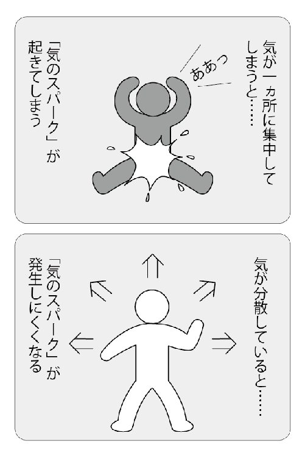
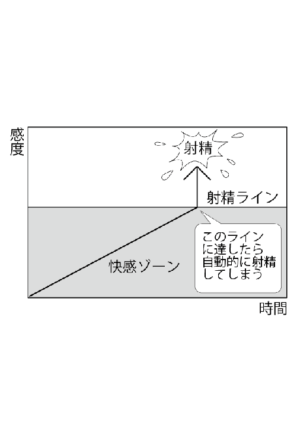
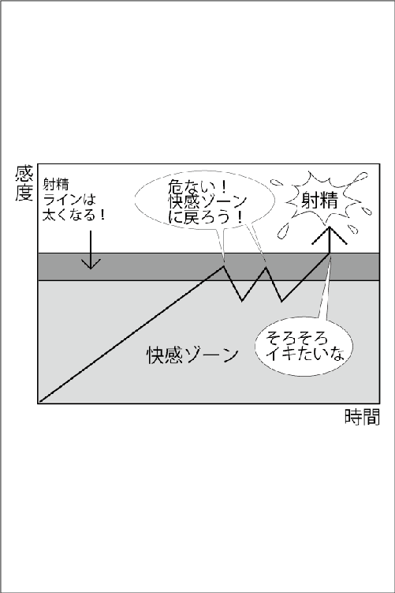
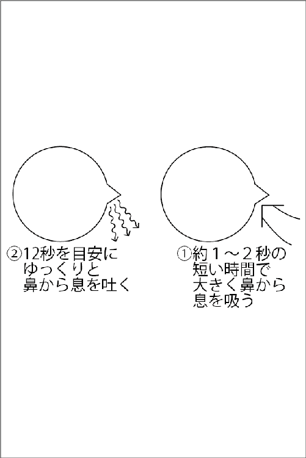
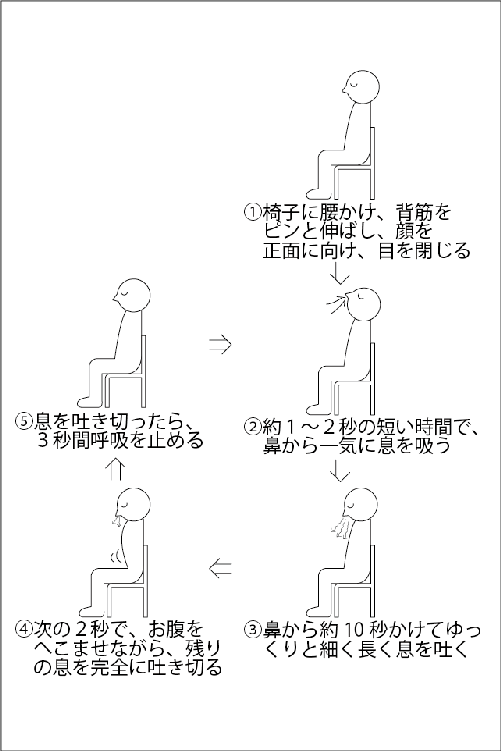
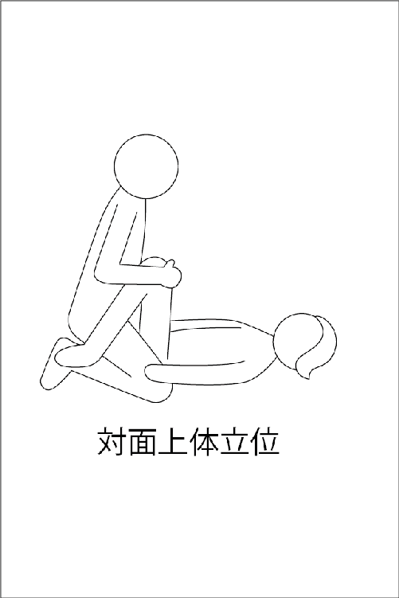
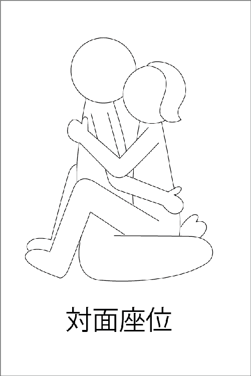
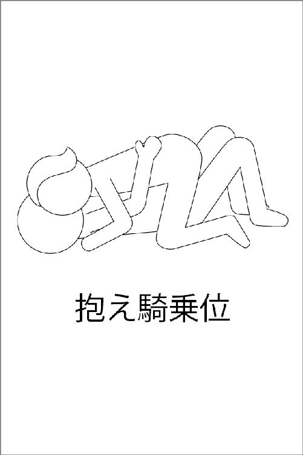
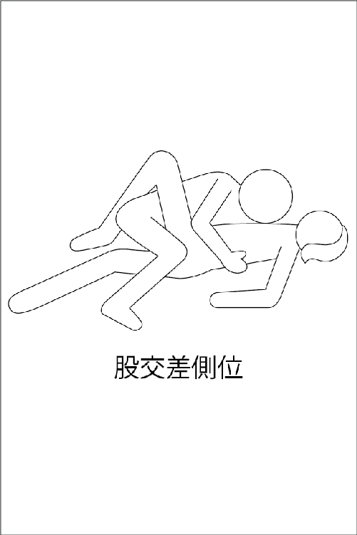

| アダム徳永の持続力コントロール法 女性を悦ばせるための早漏克服メソッド (クラップ・まとめ文庫) | |
| アダム 徳永 | |
| (2013) | |
もう彼女に「早い」とは言わせない!
「早い」の悩みは、男から自信を奪い去る。
読むだけで長もちになる、驚きの技術の数々。
彼氏に読んでもらいたい本No.1の著者が、男なら必須のスキルを伝授!
本書は、横組みでレイアウトされています。
また、ご覧になる機種により、表示の差異が認められることがあります。
ご了承ください。
この本を読まれている方は、早漏にお悩みの方、またはより長もちさせたい方かと思います。愛する女性と長く愛し合えないことで、数々のみじめな思いを経験し、自分を呪い、わらをもつかむ思いでこの本をご購入された方も少なくないでしょう。しかし、もうご安心ください。この本を購入された時点で、あなたの悩みは半分以上解決されたも同然だからです。そして、読み終わる頃には、早漏克服という目的地にほぼ到達されていることを、ここで断言しておきます。
気休めを言っているのではありません。かくいう私も、以前は、超のつく早漏でした。三擦り半も日常茶飯事。もしも早漏選手権があれば、間違いなく日本代表候補になれるスピードを誇っていました。しかし今では、１時間でも２時間でも女性と愛し合うことができます。これからあなたにお読みいただくのは、超早漏に悩み抜いていた私が、あるとき偶然発見した「性エネルギー」という概念を初めて取り入れて独自に開発した画期的な技術です。
元超早漏という過去を持つ私だからこそ、確信を持ってみなさんにお伝えできることがあります。裏風俗史の中でまことしやかに伝承されてきた早漏克服法は、性科学的根拠などないデタラメな方法ばかりだということです。だから役に立たなくて当然なのです。
かつて私がそうだったように、早漏に悩む男性のほとんどは、ひとつ大きな誤解をしています。それは、挿入時間に対する誤解です。早漏に悩む男性は、とにかく今より１分でも１秒でも「長もち」したいと思っています。どうしたらイカないように我慢できるか？ と。そうではないのです。我慢しながらするセックスが楽しいはずがありません。あなたがこれから手にしようとしているのは、２時間でも平気な「長もち力」ではなく、いつでも好きなタイミングで射精できる「コントロール力」なのです。
そもそも早漏は、「不治の病」でもなければ、「そういう体質」でもありません。「早漏を治したい」という日本語がすでに間違っているのです。どうか、これまでの常識を疑ってください。そこからあなたの新しいスタートがはじまります。
私は今でこそ、「セックスの達人」という照れくさい肩書をつけていただくことがありますが、かつては超早漏に悩んでいました。
「まさか？」「ウソでしょ？」「冗談ですよね？」というリアクションが返ってきそうですが、ウソでも冗談でもありません。本当に昔の私は、どうしようもない超早漏男だったのです。
かつて私は、「これは体質だから、もう治らない」とあきらめ、自分に絶望していました。
超早漏のエピソードとして、今でも忘れられないのは、学生時代、名古屋の今池にあるストリップ劇場に行った時のことです。まばゆいばかりのステージで生まれたままの姿で舞い踊る踊り子さんを見た瞬間、私は棒立ちのままイッてしまったのです。
早漏男の私は、彼女ができてからずっと、挿入から射精までは１分ともたない夜の生活が続いていました。
だから、せめて彼女には満足してもらおうと、前戯には時間をかけていました。しかし、１時間以上も汗だくになって妻の全身を舐めまわしてクンニでちゃんとイカせた挙げ句、こっちはたった１分でジ・エンド。
前戯１時間：挿入１分――この虚しさが、おわかりいただけるでしょうか。
本能は、もっとつながっていたい！ と叫んでいるのです。けれども、上に乗られると、すぐに局部に熱い何かが押し寄せてきて、あっという間に爆発してしまうのです。何をやっても我慢できないのです。
当時、一番うらやましかったのは、ＡＶ男優です。なんでそんなに烈しいピストン運動を長時間続けることができるのか？ こっちは、イカないようにイカないようにと願いながら、恐る恐る腰を動かしているわけですからね。私にはＡＶ男優全員が、スーパーマンに見えました。彼らは特別な人、私は普通なんだと、本当にそう思っていました。
早漏に悩む男性は、あらゆることを試します。あなたもこれまでいろんな方法を試されてきたことと思います。世の中には、なんとなく科学的に思えるものから、あやしげなものまで、文字通りピンからキリまで、さまざまな早漏克服法なるものが存在しています。
あなたはどんな方法を試してみましたか？
ちなみに、私がこれまで試したものをざっと羅列してみたいと思います。
天井のシミを数える。九九を暗唱する。金冷法。早漏防止クリームを塗る。お酒を飲む。コンドームの２枚重ね。セックス前に一発抜いておく。イキそうになったら睾丸を引っ張る。ペニスを乾布摩擦する......。
だいたいこんな感じです。
中には、多少、射精の時間を遅らせてくれるものもありました。しかし、克服という言葉には程遠いものばかりでした。
たとえば、「天井のシミを数える」に代表される、別のことを考えて気を紛らわす方法ですが、セックスの最中にそんなことをして楽しいはずがありません。早漏を克服する目的は、セックスを楽しむことです。
「金冷法」は、巷ではもっともポピュラーな早漏克服法というイメージがあるので、試された方も多いと思います。ご存じない方に簡単に説明します。風呂場でお湯と水の入ったふたつの洗面器を用意して、そこに睾丸を交互に入れるという方法です。有名ですが、これによる改善報告を私は聞いたことがありません。それもそのはずです。そもそも金冷法は、回春（精力増幅）の方法なのです。それがどこでどう曲解されたのか、いつの間にか、あたかも早漏防止法のごとく誤解されてしまったのです。
早漏に悩む男性は、みなさんそれぞれに涙ぐましい努力をされます。しかし、期待したような効果が出ないため、結局あきらめてしまう。さんざんいろんなことを試してはみたものの、全部がダメだから、「体質だから、もう治らない」と、あきらめてしまう。これが、男性から自信を喪失させるパターンなのです。
私は絶望しました。私は男として性の喜びを得られないみじめな人間だと思いました。
しかし、違うのです。何を試してみてもよい結果が出なかったのは、あなたの努力が足りなかったからでも、あなたの体質のせいでもありません。方法が間違っていたのです。今、世の中でまことしやかに語り継がれている「早漏克服法」なるものは、間違いだらけ。ウソっぱちなのです。
正しい早漏克服法を開発して、積年の早漏克服を果たした時、そのことに気がつきました。
もしもあなたが現在、なにか続けられている早漏克服法があれば、今すぐやめてください。あなたから自信を奪い去るだけです。
なにをもって早漏とするのか？ これまで早漏の定義には諸説ありましたが、その多くは、挿入時間に関するものです。
・挿入から射精までの時間が２分以内で、これが過去６ヵ月以上の間に、性交の50パーセント以上で発生する場合
・不十分な勃起状態で、挿入前または挿入15秒以内の射精
・挿入１分以内の射精
・パートナーが希望する挿入から射精までの時間内で、射精をこらえられない場合
これらが、既存の早漏の医学的定義の代表的なものですが、今ご覧になって、安心された男性は多いのではないでしょうか？
「なーんだ。オレは、そんなに短くないから大丈夫」
と。残念ですが、その考えは間違いです。既存の定義づけの第一義的要素は、生殖能力の有無です。簡単に言えば、「そんなに短いと、子づくりに支障をきたすから、治療が必要ですよ」という話にすぎないのです。
誰だって、自分が早漏だと認めたくはありません。それが男性心理です。
ですから、以前の私のように、どうがんばっても１分と持たない超早漏ならいざ知らず、多くの男性は、イカないようにイカないようにがんばって、「今日は10分も持った」「オレだって、がんばれば20分以上持続できるから、早漏ではない！」と、自分を励まし、プライドを保とうとしてきたはずです。
けれども、持続時間と女性の満足度は、単純にイコールではないのです。時間で一喜一憂するのはもう終わりにしましょう。
ここに早漏の定義を発表します。心して聞いてください。
早漏とは何か？
それは、「射精をコントロールできないすべての男性」のことです。
早漏かそうでないかの違いは、何分以上持続できるかではなく、パートナーの女性の官能レベルや体調に合わせて、自由自在に射精をコントロールできるかどうかなのです。
たとえ、がんばれば20分持続できるという男性でも、セックスの最中に、ちらっとでも「イカないようにしなきゃ」と思っている限り早漏なのです。
どんなにがんばってもせいぜい３分がやっとだった超早漏の私と、がんばれば20分できる男性とでは確かに違います。しかし、がんばれば20分できる人は、「がんばれる部類の早漏の人」だということです。
スクールでは、このような、がんばれば少しは長もちできる男性のことを、「類早漏」と呼んでいます。
「そんなことを言ったら、ほとんどの男性が早漏に入るのでは？」と思いませんか？
――その通りです。一般に「日本人の７割が早漏」などと言われていますが、実際は、遅漏を除けば日本人の99パーセントは、早漏もしくは類早漏なのです。
挿入するとすぐに射精してしまうペニスを、「なんて情けないペニスなんだ」と思ってはいけません。
それは大きな誤解です。まったく逆なのです。能力が低いどころか、あなたのペニスは、感じる力＝性的感受性が、高いのです。ペニスの感度があまりにも高すぎるため、管制塔である脳が、コントロールできていないのです。だから微弱な刺激にたちどころに反応して、管制塔の指令が間に合わずに、暴発してしまっているのです。
あなたはすでに、超高感度な受信機を持っているのです。後は、周波数や音量を調整するつまみを手に入れればいいだけなのですが、これまでの価値観を変えるためにも、まずは、あなたが、自分の優れた資質を認識する必要があります。
先に「感じる力」と言いましたが、感じる力の源になるのが、「性エネルギー」です。この言葉は、これから何度も出てくる重要なキーワードですが、ここでは名前を覚えるくらいの軽い気持ちで、読み進んでください。
私がセックススクールの運営に乗り出した、当初の最大の目的は、巷に蔓延するジャンクセックスの被害に遭う女性の救済にありました。「一度もイッたことがない」「彼のオモチャにされているような悲しい気分にしかならない」「交接が痛くて我慢できない」「死ぬ前に一度でいいから、女性の喜びを知りたい」......。
気持ちよくて当たり前のセックスで気持ちよくなれないという享楽的な意味としてだけではなく、愛すべき女性たちに「なぜ私は、女なんかに生まれてきたんだろう」とまで思いつめさせてしまう、まさに無法地帯と化したセックスの酷い現状を、私は、見て見ぬふりなどできなかったのです。
一般男性に、愛する女性とセックスをするために、最低限身につけて欲しい、必須スキルは３つあります。ひとつめは、言うまでもなく「愛情」。ふたつめは、「スローセックスの習得」。そして３つめが、「早漏の克服」です。
この３つのスキルを身につけて初めて、昔風に言えば、晴れて大人の仲間入りができる「元服」だと思うのです。30歳成人説とまで言われる今、形骸化している成人式などやめて、無免許運転をすると法律で罰せられるように、セックスも免許制度にすべきだと、冗談ではなく大真面目に思っています。
さて、成人男性の中で、先述した３つのスキルをすべて備えた人が、どれほどいるのでしょうか？
「イケメンにテクニシャンなし」とは、経験豊富な大人の女性たちの間では今や常識です。見た目のカッコイイ男性は、放っておいても女性が寄ってくるために、セックステクニックを磨く努力を怠ってしまうのです。ちなみに、イケメンの部分は、たびたび「デカチン」や「金持ち」に変わります。テクニックを磨かず、それでいてオレ様的なセックスをする男性に、女性たちは「期待はずれ」の烙印を押すのです。
経験豊富な女性たちの間で意外にも「テクニシャン」と高評価なのは、外見的なコンプレックスを持っている男性です。彼らは、イケメンではないぶん、一生懸命にテクニックを磨く努力をします。
この心理に近いのが、早漏の男性です。自分がそうだったので、手に取るように気持ちがわかるのですが、早漏の男性は、挿入後の自分に自信がないぶん、その弱点を少しでもカバーしようと、これでもかと前戯に時間をかけるのです。
今、15分が一般男性の前戯のアベレージとされていますが、もしも早漏男性だけでアンケートを取れば、軽く30分は超えるのではないでしょうか？ 動機が不純といわれようが、前戯が長いことは、スローセックス的にとてもいいことです。そして、長い前戯が当たり前になっているあなたは、きっと女性に対する愛情も合格点に達していることでしょう。
ほら、もうあなたは３つある必須スキルのふたつをほぼクリアできているのです。後は早漏を克服するだけです。
やはり、交接は、セックスの最大の醍醐味です。たっぷりと前戯を楽しみ、女性のカラダに官能の炎が燃え盛っている状態で挿入してもすぐに果ててしまっては、あなた自身が虚しいだけではなく、愛する女性に、本当の女性の喜びを与えてあげることはできません。
「早漏のオレなんか全然ダメ」と後ろ向きに考えるのではなく、「よし、課題は、あとひとつだ！」と、前向きに考えましょう。その資格があなたにはあるのです。
早漏の克服なんか簡単ですよと、気休めは言いません。それなり以上の努力が必要です。私も苦労しました。しかし、ひとつ確実に約束できることがあります。それは、早漏の克服は、人生で一度だけでいいということです。一度自転車に乗れるようになったら、しばらく自転車に乗っていなくても、カラダが乗り方を覚えているように、一度早漏が克服できたら、それはあなたにとって一生モノのスキルになるのです。
一生モノのスキルを手にして、自信と喜びに満ちた人生を満喫してください。
日本人の99パーセントは（類）早漏と聞いて、ホッと胸をなでおろした方もいれば、「たった１分のおまえと一緒にするな」と憤りを覚えた方もいらっしゃると思います。ホッとしたあなた、安心している場合じゃありません。たった１分の私と一緒にされて腹を立てている方、こんなところでドングリの背比べをしている場合じゃありません。
今日あなたには、目指すべき新しい目標ができるのです。
それが、私が「超漏」と名づけた能力を手に入れるという目標です。
早漏に悩む男性が、なにはともあれまず考えることは、
「今よりも少しでも長もちできるようになりたい」
ということです。その願いの切実さは、私もよくわかります。１分でも、いや１秒でいいから長もちしたい。超早漏時代の私も、まったく同じことを考えていました。
しかし繰り返しますが、早漏かそうでないかは、単に挿入時間の長短ではありません。長ければいいというものではありません。早漏の男性から見れば、遅漏がうらやましく思えるでしょう。しかしそこには重大な誤解があります。イキたくてもイケない遅漏の男性の苦しみは、本人でないとわからないものなのです。
必要なのは、「長もち力」ではなく、射精の「コントロール力」なのです。
男性が養うべきスキルは、コントロール力ただそれひとつです。元々、優秀な性的感受性を持つあなたが、コントロール力を身につけたら、無敵になれるのです。今までとはセックスの価値観がガラリと変わります。
今のあなたには信じられないかもしれませんが、射精を自由自在に操れるようになってまず変わることは、射精にそれほどこだわらなくなることです。今までは射精にとらわれて見えなかった、射精の向こう側にある本当の官能の世界を目にするのです。
その能力こそ、「超漏」です。
少し気が早いかもしれませんが、あなたが「超漏」になった後の話をしましょう。
類早漏の時は、セックスに自信がなく、コンプレックスの塊でした。それが超漏になると、セックスに対して一切悩みがなく、男性としての絶対的な自信を手にします。
類早漏の時は、余裕がないためにセックスに集中できず、女性を官能させる工夫も疎かでした。それが超漏になると、気持ちに余裕があるので、女性の反応を冷静に観察して的確なテクニックを繰り出せるようになります。
類早漏の時は、恐る恐る腰を動かさねばならないため、交接を心から楽しむこともできず、射精後も虚しさだけが残りました。それが超漏になると、何の不安もなくいろんな体位で女性と一体感を満喫し、大爆発と呼ぶにふさわしい超絶の快感を味わうことができます。

次章からいよいよ早漏克服のための具体的な方法を開陳していきます。
早漏は必ず克服できます！ 早漏は病気ではありません。「治す」ものではなく、「克服」するものなのです。
もしもまだ、従来の「もうこの病気は治らない」とか「体質だから変えられない」といったイメージをお持ちでしたら、そんな間違ったイメージはこの場で頭の中から消し去ってください。
これから私が伝授するのは、射精を抑える方法です。方法に関しては、あなたが初めて聞く話が多いと思いますが、基本はとてもシンプルな考え方です。それは、「マスターベーションの時間を長くしていく」ということです。
実は、早漏の男性は、セックスだけでなく、マスターベーションも短時間で終わらせているケースがとても多いのです。射精に耐えるのではなく、ゆったりと快感を楽しむことを目的とした、いわば「スローマスターベーション」を日頃から心がけることが、早漏克服のファーストステップです。
あなたが日頃、マスターベーションを３分で済ませているなら、３分を５分にする、５分になったら10分にする、10分が15分、15分が30分......、というように、マスターベーションが長く楽しめるようになれば、おのずと早漏は克服できるのです。
私が現在のスローセックスの礎となる性感帯開発の研究を始めたのは、34歳の頃でした。31歳で画家としての成功を夢見て渡米したものの、生活のためにしていたイラストの仕事だけでは食べていけず、ロサンゼルスでマッサージテクニシャンの資格を取得し、副業でマッサージの仕事を始めました。
セレブなアメリカ人女性たちにマッサージを施すうち、官能を示す女性が少なくなかったのです。女性のカラダには計り知れない深い性感帯があることに気づいた私は、本格的にオーガズムマッサージの研究を始めました。
私のマッサージは好評を博しました。超早漏の日本男性のオーガズムマッサージが、アメリカの富裕層で人気を博していたというのも今考えれば珍妙な話ですが、超早漏というコンプレックスが、テクニックの追究に駆り立てたのかもしれません。
さて、そんな折、いきなり人生のターニングポイントが訪れました。ある日のこと、私は生まれて初めて長もちを経験したのです。
10分やってもイカない。15分たっても大丈夫。あれっ何だ？ いつもなら挿入した途端に下腹部に「熱い何か」がこみ上げてきて我慢できなくなるのに、その日だけは「熱い何か」が襲ってこないのです。ならばと少し調子に乗って、激しくピストン運動しても、まったく大丈夫でした。
その女性は30代半ば。肉体も、性的好奇心も、積極性も、まさに女盛りと呼ぶにふさわしい魅力に満ち溢れていました。過去に私が味わったことのないほど、濃厚で情熱的で淫靡な時間だったのです。
長もちする時ともたない時の違いとは何か？ そして私は、ある決定的な違いに気づくのです。それは、「キスの時間」でした。その女性はキスが大好きで、いつまでも濃厚に情熱的に舌を絡ませてくるのです。その違いに気づいた瞬間、私はいつも自分を悩ませていた、あの「熱い何か」の正体がわかったような気がしたのです。
「熱い何か」の正体は、「気」ではないか？
マッサージの技術を学ぶために、鍼灸やヨガを勉強していた私は、「気」の存在を知っていました。偶然といえば偶然ですが、その知識が、早漏の悩みとピタリとシンクロしたのです。
私は、検証してみる価値のある、ある仮説にたどり着きます。
「射精とは、気のスパークである」
「熱い何かの正体は気であり、局部に気が集中することで、気のスパークが起きる」
「濃厚なキスによって、気が相互の体内を循環し、局部に溜まっていた気が、分散されることで、気のスパークが発生しにくくなったのではないか？」
「意識的に、気を分散させることができれば、早漏は克服できるはず！」
気の存在に気がついたことで、最初はただただ長もちしたいと願っていたにすぎない私が、射精だけではなく気を自由自在にコントロールできる「超漏」を手にすることができたのです。
早漏克服がきっかけで気の存在に着目した偶然はその後、「セックスは気の交流である」というセックスの本質へと昇華されます。
私の他の著書をお読みになった方にはお馴染みの「性エネルギー」というまったく新しい概念をセックスに取り入れたのが、スローセックスなのです。一般の方々が、ふだんまったく気にもとめていない性エネルギーを意識し、それを増幅させ、自在にコントロールすることで、セックスはドラスティックな変化をみせます。
どうも話がいきなり難しくなってしまいましたね。ちょっとスローダウンしましょう。
今の段階では、目には見えない「気」が、早漏にさせる犯人のひとりだと、覚えておいていただくだけで結構です。

敵を知らなければ勝負には勝てません。射精は男性の敵ではありませんが、超漏を手にして射精を味方につけるまでは、敵ということにしておきましょう。
ほとんどの日本人は、「気」という言葉を聞いたことがあっても、日常生活でその存在を意識したり、気に興味を持っている人は少ないと思います。むしろ、「あやしい」「うさんくさい」といったネガティブなイメージのほうが強いでしょう。
「気」を無理に信じる必要はありません。大切なのは、あなたが早漏を克服することです。「そこまで言うなら、アダム徳永の仮説を検証してやろうか？」と、考えてください。
「射精の原因が気なら、気をコントロールできれば早漏は克服できる」という仮説のもと、独自に気功やヨガの勉強をして、試行錯誤を繰り返し、早漏を克服して初めて気の存在を実感することができたのです。
早漏になるのは、スキンが敏感だからではなく、気に敏感だからなのです。
男性はプラスの性エネルギーを、女性はマイナスの性エネルギーを持っています。挿入しただけで射精してしまうのは、あなたのプラスの性エネルギーが、女性のマイナスの性エネルギーと接触することで、スパークするからです。性エネルギーがスパークすると、脳にその情報が伝達されて、射精のスイッチが入り、射精に至るのです。これが、射精のメカニズムです。
さて、今、「射精のスイッチ」という話をしましたが、脳にある射精のスイッチを押すのは、性エネルギーのスパークだけではありません。もうひとつ、フィジカルな要因があります。
男性のマスターベーションの仕方は、利き手でペニスの竿を握って、ペニス全体を上下にしごくというやり方が一般的です。亀頭の先端は、俗に「縫い目」と呼ばれる亀頭の裏側にあるスジで竿の部分とつながっています。そのため、ペニスを上下にピストン運動させると、竿の皮が上下に動くことに連動して、亀頭の先端もリズミカルに振動します。この振動が問題なのです。実は、亀頭の先端に与えられたリズミカルな刺激は脳に伝達され、一定の感度に至ると、脳が勝手に射精のスイッチを押してしまうのです。
このメカニズムも、頭に入れておいてください。
セックスで快感を覚えることを、「感じる」と言いますが、感じるのはどこですか？ 簡単ですね。感じるのは脳です。
しかし、テストなら簡単に正解が出せる問題も、脳の中身は見えませんから、つい感覚的に「皮膚が感じている」という錯覚をしてしまいがちです。
この錯覚は、早漏がなかなか克服できない要因でもあります。私もこれでさんざん、失敗した口です。早漏なのはペニスが弱いからだ。ペニスを鍛えて強くすれば、快感に耐えられるはず。そう考えてしまったのです。ペニスを乾いた雑巾で皮がむけるほどゴシゴシ擦ったり、亀頭がリズミカルな振動をしないようにと、縫い目を力いっぱい引っ張って伸ばそうとしたり、本当にペニスには悪いことをしました。
しかし、感じているのはペニスではなく脳なのです。
物理的な刺激に対して強くなるのではなく、快感という感受性に耐えられる脳神経をつくり、長もち力をアップさせることが、最大の目的なのです。
敵を知り己を知る。これは、兵法の定石です。射精のメカニズムを知り、まずあなたは敵の正体がわかりました。今度は、己を知る番です。
射精に至る過程には、快感を楽しむ「快感ゾーン」があります。今、あなたは快感ゾーンを走っているとしましょう。次第に興奮が高まり、次に見えてくるのは、射精ラインです。射精ラインの向こう側にあるのは、射精ゾーンです。射精ラインを踏み越えて、一歩でも射精ゾーンに入ってしまったら、もう誰も引き返せません。それは、射精を自在にコントロールできる超漏を手に入れた私でも同じです。いったん射精ラインに突入したら、ベルトコンベヤーで運ばれるように、フィニッシュと書かれたゴールテープに運ばれてしまうのです。

つまり、射精をコントロールできるのは、快感ゾーンでの話なのです。
この話を踏まえて言うと、早漏とは、快感ゾーンが短い人のことです。ちょっと快感ゾーンを走ったら、すぐに射精ラインに来てしまう、ということですね。まだまだ体力は十分残っていて、もっともっと感じていたいのに、ちょっと走っただけで快感ゾーンが終わってしまう。これではセックスを存分に楽しむことはできません。
あなたの最終的な目的は射精のコントロールですが、コントロールの前に必要なことは、今の短い快感ゾーンを、長くすることです。そこでまずは、コントロール力の前に、「長もち力」をアップしていただきます。
長もち力をアップさせるにはどうすればよいか？ それが「脳を鍛える」ということです。ちょっと快感や興奮を覚えたくらいでは、射精ゾーンに突入しない、快感に耐えられる脳をこれからつくっていただきます。
脳を鍛えるメソッド自体は、とても単純です。マスターベーションをしている途中で、イキそうになったら、パッとペニスから手を離す、俗に言う「寸止め」を、繰り返し行うことで、脳は鍛えられます。
寸止めの初期段階での最大のポイントは、「どこでパッと手を離せば間に合うか？」そのタイミングをつかむことです。そのコツがつかめるようになると、今まで認識できていなかった射精ラインが、イメージできるようになってきます。そうなればしめたものです。何度も繰り返し寸止めをしても、それほど苦ではなくなってきます。それは同時に、「長もち力」が強化されていることを意味するのです。
私からあなたに、勇気が湧いてくる事実をお教えしましょう。「射精ライン」は、寸止めを繰り返すたびに、よりはっきりと見えるようになります。それだけではありません。続けていると、ラインの幅が広くなってくるのです。
つまり、ラインが細い時は、ちょっと片足がラインに乗っかっただけでも、ラインを踏み越えて射精ゾーンに突入してしまっていました。しかし、ラインの幅が広くなると、片足が入った程度なら、快感ゾーンに引き返すことが可能になるのです。これは、射精のコントロールという観点からも、目覚ましい進歩です。
最初の頃は、何度も何度も射精の誘惑に負けて、失敗してしまうことでしょう。大丈夫です。私もそうでした。肝心なのは、１回や２回、いえ10回や20回の失敗くらいでくじけないことです。挫折しないことです。何度も失敗を繰り返すことで、いえ、何度も何度も失敗を繰り返さなければ、射精ラインは見えてこないのです。

１０００人を超える一般男性から聞き取り調査をした結果、マスターベーションの仕方と射精コントロール力との、ある重大な相関関係が判明しました。マスターベーションにかける時間が短い男性ほど、セックス中の挿入時間が短い（つまり早漏率が高い）という事実です。考えてみればあたり前のことですが、この当たり前を見逃してはいけません。
逆もまた真なり。ゆったりと時間をかけてマスターベーションを楽しむこと。いわばスローマスターベーションの習慣を身に付けるだけで、あなたの持続力とコントロール力は、自然にそして確実にアップしていくのです。
一般男性のスタンダードなマスターベーションの方法は、ペニスの竿を強く握り、上下に烈しくしごくというやり方です。しかし、早漏克服という観点からみたとき、このスタンダードは決して褒められたものではありません。もはや解説不要ですが、単に早く射精してスッキリしたいだけの方法だからです。
そこでここでは、スローマスターベーションに適したペニス愛撫として私が奨励している、２つのポイントをご紹介します。
まずひとつめは、「亀頭をメインに愛撫する」です。一般的とされる、ペニスを上下に烈しくしごくやり方では、どうしても、亀頭に皮がかぶさる状態になってしまいます。これでは、ペニスの中でもっとも敏感な亀頭にダイレクトに刺激を伝えることができません。
ふたつめは、「ソフトな愛撫」です。亀頭をメインに優しくマッサージするという意識を持つことで、快感を存分に享受しつつも、拙速に射精に突き進むことがなくなります。
ここがとても大切なポイントで、快感を長く楽しむことで、「快感に耐えられる脳神経」が形成されていくのです。
鍛えるべきはペニスそのものではなく脳であるという意識改革のもと、マスターベーションを日常の楽しみとして有効活用することが、早漏克服の大きなカギになります。
早漏克服のためには、勃起と射精についての、性科学的な基礎知識を学んでおく必要があります。ここでお話しするのは、勃起と射精に密接に関わる「自律神経」のメカニズムについてです。ちょっと難しいかもしれませんが、なるべく手短に済ませますので、がんばってついてきてください。
まず神経は、意識して動く随意神経と、意識しないでも勝手に動いている不随意神経のふたつに分かれます。不随意神経とは、心臓とか胃や腸、発汗作用などを司る神経です。
これから説明する自律神経は、不随意神経に属します。自律神経は２種類あります。「交感神経」と「副交感神経」です。交感神経は、緊張や興奮している時に働く神経で、副交感神経は、リラックスしている時に働く神経です。
授業は始まったばかりですが、ここで小テストをしてみましょう。
・Ｑ１ 勃起中は、交感神経と副交感神経のどちらが優位に働いていると思いますか？
ペニスは硬く緊張しているから、交感神経だと思われた人が多いと思いますが、答えは副交感神経です。いきなり引っかけ問題ですみません。極端な話、暴漢にナイフで脅されている時に、ペニスは勃起しませんよね。自分に襲いかかろうとしている暴漢に対して極度に緊張している状況では、交感神経の働きが優位に立ち、ペニスは萎えるのです。つまり、副交感神経が働いて、リラックスしている時でないと、ペニスは勃起しないのです。
２問めは、射精と自律神経の関係についての問題です。
・Ｑ２ 射精の時は、交感神経と副交感神経のどちらが優位に働いていると思いますか？
こんどは、ほとんどの人が正解を出せたと思います。射精の瞬間、ペニスは緊張していますから、交感神経が優位に立つ、が正解です。
以上の知識を整理すると、射精を遅らせるには、いかに副交感神経を優位に働かせるか、つまりリラックス状態にするかが重要なポイントということです。自分の状態を常に把握しておくことは大切です。
勃起は副交感神経、射精は交感神経と、覚えておいてください。
早漏克服のために欠かせない基礎知識を学んでいただいたところで、いよいよあなたが一番知りたい射精コントロールの説明に入らせていただきます。基本的としては、「呼吸法」「アナル締め」の２つです。
最初にご紹介するのは、もっとも重要な「呼吸法」です。
実は呼吸は、前項で説明した自律神経と密接な関係があります。呼吸を工夫することで、副交感神経を優位に働かせ、意識的にリラックスモードに導くことで、射精を抑制することが可能となるのです。
では基礎知識のおさらいを兼ねて質問します。呼吸には「吸う」と「吐く」がありますが、どちらの時が、副交感神経が優位に立つでしょうか？
はい、正解は「吐く」時です。緊張している時に、「大きく深呼吸しなさい」とよく言われますよね。試しに予備知識が少ない今の状態で、実際に深呼吸をしてみてください。
――息を吸う時間と、吐く時間のどちらが長かったですか？ 自然と吐く時間のほうが長くなっていると思います。息をゆっくりと長く吐くことで副交感神経が優位に働く時間が長くなり、緊張が緩和されリラックスすることができるのです。ちなみにヨガや気功では、リラックス状態になるために、吸う時間よりも吐く時間を長く取ります。
ワンポイント呼吸法
①約１～２秒の短い時間で、大きく鼻から息を吸う。
②12カウント（秒）を目安に、ゆっくりと鼻から息を吐く。

単純だと思われるかもしれませんが、この中にもいくつかの重要なポイントがあります。
息を吸う時間を短くするのはなぜか？ 先ほどから学んできましたが、息を吸う時は、緊張や興奮を促進する交感神経が優位に働きます。ですからその時間をできるだけ短くしたいというのが理由です。とはいえ、次のステップで息をゆっくりと長く吐くためには、肺に十分な空気がないといけません。ですから、瞬間的に十分に息を吸えるようになるところから始めてください。ただしその際も、めいっぱい息を吸ってしまうと、苦しくなってしまいます。そこでワンポイントアドバイス。息を吸う時は、肺に80パーセントの空気が溜まるくらいを目安に行ってください。
またこの呼吸法では、息を吸う時も吐く時も口ではなく鼻で行いますが、これにも理由があります。単に副交感神経を優位に働かせてリラックスモードになることだけを目的とするなら、口でも鼻でもどちらでもいいのです。
事実、ヨガや気功にはさまざまな流派があり、流派によって「鼻から吸って口から吐く」というパターンも存在します。ではアダム流はなぜ「鼻から吸って鼻から吐く」のか？
それは、口臭です。セックスの最中に口から大きく息を吐くという行為は、あまり品のある行為とはいえません。そのため、「鼻から吸って鼻から吐く」を習慣にしていただきたいのです。
まずは、ワンポイント呼吸法ができるようになってください。この呼吸法だけでも、何度も繰り返すことによって、かなり射精欲を抑制することができます。
さて、ではいよいよ、私が超早漏を克服した、「射精コントロール呼吸法」を伝授しましょう。先ほどから、何度か登場しているヨガ・気功からヒントを得て、私が独自に開発した呼吸法です。ワンポイント呼吸法に、独特のイメージをプラスさせただけですので、やり方はとてもシンプルです。
射精コントロール呼吸法
①背筋をピンと伸ばし、顔を正面に向け、目を閉じる。
②約１～２秒の短い時間で、鼻から一気に息を吸う。息を吸う時は、頭部に肺があり、お尻の穴から吸い上げた空気が、背骨の管を通って、頭部の肺に吸い上げられるイメージで。
③鼻から、約10秒かけて、ゆっくりと細く長く息を吐く。
④次の２秒で、お腹をへこませながら、完全に残りの息を吐き切る。
⑤息を吐き切ったら、３秒間呼吸を止める。
⑥２に戻り、射精欲がおさまるまで何度も繰り返す。

射精コントロール力を自分のものにするために、この呼吸法のマスターは絶対不可欠です。日頃のマスターベーションを練習時間にして、射精したくなったら、手を止めて、呼吸法を行うといいでしょう。
ここでもうひとつ、早漏克服に役立つ、とっておきの秘儀を伝授させていただきたいと思います。
それが、「アナル締め」です。
アナル締めを行うタイミングは、呼吸法を行った直後です。
「短く一気に息を吸って～、ゆっくり長く息を吐いて～」の後で、お尻の穴をキュッキュッキュッと、10回リズミカルに締めてください。
お尻の穴を締めるという動作の時は、お尻の穴の筋肉を緊張させているわけですから交感神経が優位に立ちます。アナルとペニスは隣接していますから、交感神経が優位に働いている影響は、自然とペニスにも及びます。つまりペニスも緊張している状態です。
ここで「交感神経と副交感神経」の話を思い出してください。緊張状態の時は、ペニスはどうなりましたか？ 勃起するのは副交感神経が優位に立ち、リラックスしている状態でしたよね。今はそれと逆の状態ですから、ペニスは萎えてきます。
つまり、アナル締めをすることでペニスは萎え、そのことで射精を抑制することができるのです。
さて、アナル締めには、ひとつ注意点があります。それは、アナル締めをやりすぎると、男性によっては、ペニスが完全に萎えてしまって、しばらく勃起しなくなるケースがあるということです。それほどアナル締めには射精を抑制する効果があるという証拠なのです。アナル締めの効果が出すぎる場合は、回数を10回から５回に減らしたり、アナル締めはほどほどにして呼吸法に専念するなど、自分の体質に合わせて調整して各自カスタマイズしていってください。
基本を踏まえたうえで、自分に合ったオリジナルのやり方やノウハウを構築していくことは、効果を上げるためにとても重要なことです。
人間のカラダからは常に性エネルギーが発せられています。とくに強力な性エネルギーを発しているのが、指先、手のひら、舌先、性器の４ヵ所です。
気に敏感な女性の中には、フェラチオでの射精の直前に、「顔に何かがドバーッとかかるような感覚がある」と言う人もいます。そこまで敏感でなくとも、ペニスを口に含むだけで気持ちいいと言う女性が少なくないのは、まさに女性が、男性の発する性エネルギーに反応しているからなのです。バイブを口に含んだとしても、同じことは起こりません。モノでしかないバイブには、性エネルギーがないからです。
早漏は資質であると言いました。早漏は、その男性が持つ性エネルギーが強力であり、性エネルギーに敏感な証だからです。ここで、もうひとつの事実を開陳しましょう。実は、男性と女性を比べた時、女性のほうが遥かに性エネルギーに敏感だということです。だから女性は、トップクラスの性エネルギーを持つ男性と交わった時、気だけで官能することができるのです。この性差による不思議は、女性が「受け身の性」として授かった才能としか説明のしようがありません。
今のあなたに、こうした話をすぐに信じてくださいとは言いません。男性とは、実際に自分で体験したことのないことは、信じられない生き物です。性エネルギーという概念がまったく持ち込まれていない既存のセックスで、あなたが性エネルギーの存在を実感した経験などないのが当たり前なのです。私もそうでした。私がお話ししていることは、すべて私が性エネルギーをコントロールできるようになってから経験したことです。
けれども、あなたがこれまで、性エネルギーに官能している女性を見たことがないとしても、こんな経験はありませんか？ 好きな女性と手をつないだだけで、カラダに電流が走ったような感覚がした。好きな女性と抱き合うだけで、カラダが熱くなった......。早漏という現象が、性エネルギーの悪戯であるように、こうした感覚を覚えるのも、すべて性エネルギーの仕業なのです。
自分自身のために、そして愛する女性のために、あなたが持つトップクラスの性エネルギーを解き放ってください。
「気」は誰もが持つエネルギーです。気の概念がなくとも、その存在に気づいていない人でも、無意識のうちに増えたり減ったり、動いたりしています。血液と同じように、勝手にカラダの中を流れているのです。何かの原因で血管が詰まって、血の巡りが悪くなると当然、カラダに悪影響が出ますよね。
気も同じです。気の巡りが悪くなると、精神的なコンディションが悪くなり、必要以上にストレスを感じたり、ちょっとしたことで気分が滅入ったり、うつになったり、ひどくなればカラダの免疫力や抵抗力が弱くなり、肉体面にも悪影響を及ぼすことにもなります。
そして実は、早漏になるのも、気の巡りが滞るのが原因です。性エネルギーは、女性の裸を見る（視覚）、女性の喘ぎ声を聞く（聴覚）、オッパイを触ったり、ペニスへの刺激（触覚）といった性的情報を脳が受信することで、どんどん増えていきます。前戯の段階はもちろん、デートの最中にも、あなたのカラダの中で増え続けています。
増幅した性エネルギーは、とにかくペニス周辺に集まろうとする性質を持っています。下腹部が熱くなるのはそのためです。射精がコントロールできないのは、気の巡りが円滑でないために、ペニス周辺に溜まった性エネルギーが、他の部分に流れることができずに一点集中してしまい、まさにコップから水がこぼれるように、スパークしてしまうからなのです。
無意識のうちに、局部に集中してしまう性エネルギーを、意識的にカラダの他の部分に流すようにすれば、射精は抑制されます。自分の意思で自由自在に性エネルギーをコントロールできるようになれば、早漏は克服できるのです。
性エネルギーを完全にコントロールするのは、それほど簡単なことではありませんが、トライする価値は十分にあります。なにしろ、それまでのセックスライフと呼ぶのもおこがましいみじめなセックスが、私の場合はほんの数ヵ月を境にバラ色に変わったのですから。
いよいよ、性エネルギーをコントロールする呼吸法を紹介します。大切なのは、意識の置き方と、イメージ力です。
実際のセックスで、性エネルギーを交流させる呼吸法をレクチャーします。
おさらいをしておきましょう。性エネルギーの交流にはふたつの意味があります。１点めは、局部に溜まりやすい性エネルギーを、全身に巡らして、射精ゾーン突入を遅らせてくれること。２点めは、互いのカラダを性エネルギーが循環することで、性エネルギーは増幅され、女性はより感じやすい体質に変わり、男性は、これまでに経験したことのない超大爆発を味わうことができるというものです。
交接は、対面上体立位で始めます（次章で詳述）。さて、ここからです。それまでたっぷりと前戯で盛り上がっているはずですから、男性の体内には、陽の性エネルギーが、女性の体内には陰の性エネルギーが充満しています。肝心なのは、ダイナミックな性エネルギーの交流をいかに早く発生させるかです。
大切なのは、イメージです。気はイメージで動くのです。
セックスでの呼吸法
①ゆっくりと腰を動かしながら、ゆっくりと鼻から息を吸う。目安は、約５秒。最大のポイントは、息を吸う時に、女性の体内にある陰の性エネルギーをペニスで吸い上げるイメージを持つこと。
②ゆっくりと息を鼻から吐きながら、先ほど吸い上げた性エネルギーを、ペニスから膣に戻していくイメージを持つ。息を吐く長さの目安は約10秒。
③以上を、何度も繰り返す。
④もしイキそうになったら、腰の動きを止めて、「射精コントロール呼吸法」と「アナル締め」で回避する。
気を吸い上げる、気を戻すというイメージが最初は難しいかもしれません。私の場合は、最初の頃は、体内に充満している性エネルギーを、「モヤモヤしたあたたかい煙」というイメージで行っていました。慣れてくれば、特定のイメージを持たなくても、自然と性エネルギーが交流できるようになります。
若い頃は回復力が早く、すぐに復活できても、中高年ともなれば二回戦に突入するのはなかなか難しいもの。
性エネルギーという言葉で説明しているように、人間の気は、電気と同じ物理的エネルギーです。射精で放出すれば、そのぶんエネルギーがなくなります。だから疲れてしまうのです。
ここで私から、とくに中高年の男性に朗報があります。実は、射精によって放出した性エネルギーを、取り戻し、二回戦に突入する方法があるのです。
タイミングは、射精の直後。フィニッシュした体勢をキープして、つまりペニスを挿入した状態のままで、放出した性エネルギーをペニスから取り戻す気持ちで、吸い込むイメージを持ちながら、呼吸法を行ってください。
ポイントは、吸って吐く時間の比率を、５対２にすること。10秒間吸ったら、４秒で吐く、という感じです。こうすることで、射精後の疲労度がまったく変わってきます。
この方法には、ひとつ注意点があります。ペニスが完全に萎えてしまうと、ペニスを抜く時にコンドームが膣の中ではずれてしまう危険性があるということです。ですから、ペニスが完全に萎える前に、呼吸法は終えてください。
いろいろな意味で、射精後も「気を抜かない」ことが大切です。
実際のセックスで、３分、５分、10分と持続力を伸ばしていくことは、割と簡単にできます。そのひとつの方法が、セックスのときに女性と手をつなぐことです。
スローセックスでは、アダムタッチで本格的な性感愛撫をする前に、「パームタッチ」というマッサージを行います。パームとは手のひらという意味で、その名の通り手のひらを使った愛撫法です。パームタッチは、非常にリラックス効果の高いハンドテクニックで、女性の心の緊張を解き、感じやすいカラダづくりの準備として最適です。やり方はとても簡単で、右手を広げ、手のひら全体が女性の肌に密着するように置いて、秒速10センチのスピードで楕円形を描くようにマッサージします。ポイントは密着度。スクールでは、「手のひらが吸盤になったようなイメージ」と説明しています。
さて、このパームタッチの実践には、とっておきのひと工夫があります。まず、女性にうつ伏せになってもらい、背中全体にベビーパウダーをふりかけ、愛撫を開始しますが、この時、男性は、自分の左手で女性の左手を、握手をするように握ってください。
手と手を結ぶことによって、「回路」がつながり、性エネルギーの交流が格段と促進されます。それによって気の分散が起こり、射精の原因となる下腹部への気の集中が回避されるのです。
性エネルギーの交流というと、難しいことのように感じますが、知識さえ持っていれば、「女性と手をつなぐ」というテクニックとも呼べない単純な行為で、簡単に長持ち力を手にすることができるのです。
一般男性に、「一番よく使う体位はなんですか？」という質問をすると、ほぼ百パーセントの確率で「正常位」という答えが返ってきます。一方で女性に「一番好きな体位は？」と聞いた場合も、正常位派が圧倒的多数を占めます。この結果に多くの人は納得するのでしょうが、実は、もっともポピュラーな体位として親しまれている正常位こそ、日本人の交接時間を短くしている大きな原因です。
ちなみに、英語で正常位は、missionary position（宣教師ポジション）と言います。15世紀から17世紀前半にかけての大航海時代、スペインやポルトガルなどの列強が南米大陸の各国・地域を侵略するに当たって、制圧した土地でキリスト教を浸透させていきました。その過程で、原住民たちが親しんでいた後背位系のセックススタイルが「動物的すぎる」と問題視され、宣教師が「より人間らしい体位」として、正常位以外の体位を禁止したことが、その語源です。
西洋化の波が押し寄せた文明開化の時代、先の大戦後のアメリカ化の波、日本の近代史におけるふたつのターニングポイントの前後に、日本人のセックススタイルにどのような変化がもたらされたのか、私は詳しく知りません。しかし、少なくとも誰からもセックスを教わっていない現代の日本人が、正常位で始まり正常位で終わるセックスに何の疑問を持つこともなく、それが普通で当たり前になっていることが、大間違いなのです。
何を隠そう、数ある体位の中で、もっとも早漏になりやすいのが正常位なのです。
最大の原因は、第２章で解説した、交感神経と副交感神経の関係にあります。正常位の時、男性の上体は大きく前に傾きます。前傾姿勢は、神経を過敏にする交感神経が優位に立つため、膣との摩擦による刺激にペニスが敏感になります。
また男性は、「目で興奮する」と言われるように、性的な情報に対して、五感の中でもとくに〝視覚〟の影響を受けやすい性質があります。正常位では、女性の感じている顔や、豊かな乳房の膨らみなど、大量の性的視覚情報を獲得できる代わりに、興奮のコントロールが非常に困難な状態に陥りやすくなるのです。しかも、正常位は男性が腰を自由に動かすにはもってこいの体位です。
これだけ射精の条件が整えば、短時間で射精ゾーンに突入してしまうことは必然。ましてや、早漏気味の男性がセックスを正常位から始めるなど、まさに自爆行為です。
そんなリスキーな体位を、正常位などと呼んでいることがそもそも非常識なのです。
以上の理由から、スクールでは、正常位はフィニッシュ体位と位置づけ、交接のスタートでの使用を固く禁じています。
正常位は「射精位」だという認識を新たにしてください。
同じ性能のペニスでも、正しい知識のもと、ほんの少し体位を工夫するだけで、その持続力は驚くほど変化します。
そこでここでは、少しでも長もちさせたい初級者はもちろん、中級者や上級者になってからも、ふんだんに活用できるスローセックス御用達体位を４つ紹介します。
これから紹介する４つの体位を実践すれば、３分だった人は５分以上に、５分だった人は10分以上の交接がすぐにでも可能になります。「あれっ、こんなことで長もちできるんだ」と、長もち体位の効能をご自身のカラダで実感してください。そして、あなたが今まで過小評価しすぎていた、自分の本当の実力を再査定してください。
①対面上体立位
挿入時にどんな体位を用いるかで、その後の展開は大きく左右されます。私が、セックスのスタート体位として奨励しているのが、「対面上体立位」です。聞き慣れない体位と思われるのも無理ありません。この体位の名称がなかったので、私が命名しました。でも、決して難しい体位ではありません。簡単に言えば、いわゆる正常位の体勢から、男性の上体をベッドに対して垂直に起こした形です。
いつもの前傾姿勢が垂直になっただけ。角度にして30度あるかないかの違いです。もっと言えば、あなたもこれまでに交接の流れの中で、今私が説明した体位になったことが何度もあるはずです。しかし、当然ながら今までのあなたは、その体位を対面上体立位だとは意識していないし、その体位が長もち体位だとは思ってもみなかったはず。体勢の差、認識・知識の差。たったそれだけの差が、下半身の環境に大きな変化をもたらすのです。

男性の上体が垂直になると、交感神経と副交感神経がニュートラルな状態になります。この自律神経の平衡化によって、過度な興奮が抑えられ、早漏気味の男性でも、射精のタイミングをある程度コントロールできるようになるのです。
それがひとつ。そしてもうひとつ。試していただければすぐにわかりますが、この体位は、激しくピストン運動するには不向きな体位です。したがって自然と下半身の暴走を食い止めることができるのです。
射精欲に執着し、なおかつ、「女性も激しいピストン運動を望んでいる」と誤解している男性は、正常位に限らず、どんな体位だろうと、無意識のうちに腰を激しく動かせる姿勢を探しがちですが、しかしこれが間違いのもと。ゆったりとした交接が生み出す淡い官能を味わうことにこそ、交接の真の醍醐味があるのです。
挿入後、ちょっとしたポイントがあります。それは、ちょっとの間でいいので（２～３分。できれば５分）、腰を静止させたままでいること。ピストンしたい気持ちを我慢して、愛する女性との一体感を楽しんでください。それが、性エネルギーを交流させるコツです。性エネルギーは、「動」よりも「静」の時に交流しやすい性質があるからです。
早漏を克服して長時間交接ができるようになれば、激しいピストン運動など、いつでも好きなだけできるようになるのですから。
②対面座位
４つの長もち体位の中でも、ザ・スローセックスと呼んでもいいほど理想的な体位が、「対面座位」です。
対面座位は、男性の上体が垂直に起きています。この姿勢は、自律神経の交感神経と副交感神経がニュートラルな関係を保つため、興奮が抑えられて、射精のスイッチが入りにくくなります。また、腰を激しく動かしづらい体位ですので、射精に突進してしまうこともなく、ゆったりとペニスによる膣の愛撫を行うことが可能です。
対面座位は、抱き合う姿勢でお互いの体を支え合うので、疲れにくいというメリットもあります。これは長時間交接を実践するうえでとても重要な要素です。
さらにこの体位のいいところは、顔と顔が向き合っているため、キスや会話といった愛のコミュニケーションが自由に楽しめるということ。

あらゆる観点から、対面座位はスローセックスに最適な体位なのです。男性から愛されている実感を欲しがる女性は、性器だけでなく、肌を密着させることを望みます。女性は、セックスで気持ちよくなればなるほど、男性にしがみついてくるという習性があるのです。愛する男性との一体感を求める女性の、根源的欲求が満たされるために、激しいスキンとスキンの摩擦がなくても、女性は十分に快感と満足感を得られるのです。
そして、カラダとカラダの密着度が高いということは、そのぶん、性エネルギーの交流が促進されるということです。
性エネルギーの交流にピッタリの腰使いをふたつレクチャーします。
ひとつめが「揺らし」。ペニスの根元を支点として、前後左右にゆったりと揺らします。波間に浮かぶ船が揺れるようなイメージで、ペニスと膣の穏やかな触れ合いを楽しみましょう。注意点は、腰だけ動かそうとしないこと。男性は左手を女性のカラダの後ろにまわして、肩甲骨付近に手を当ててカラダを抱き寄せ、密着したまま一緒に上半身全体を動かすようにしましょう。
ふたつめが、揺らしの応用編である「ローリング」です。揺らしと同じ要領で女性の上半身をサポートして、右回りに回転させます。科学的に説明することはできないのですが、「気のエネルギーは左回りよりも右回りのほうが強くなる」という法則は、私が経験則から導き出した、自然界の摂理とも言える真理です。動かすスピードはゆったりとしていますが、動かす大きさ（体の傾き）は、ダイナミックにしましょう。
ひたすら腰を振っていた頃には味わえなかったような、体の芯からジワーッと淡い快感がこみ上げてくる、まさに遠赤外線効果のような深い官能を満喫して、「セックス＝ピストン運動」という毒を抜いてください。
③抱え騎乗位
「抱え騎乗位」とは、いわゆる騎乗位の形から、女性の上体を男性が自分のほうに引き寄せるようにして倒し、互いに抱擁する体勢を取った形です。
仰向けの姿勢は、副交感神経が優位に立つため、人間が一番リラックスできる体勢なのです。ヨガでは「屍のポーズ」と呼ばれています。では、同じ仰向けなのに、騎乗位ではなく抱え騎乗位なのはなぜか？
両者の最大の違いは、主導権の主です。一般的な騎乗位では、上になっている女性に主導権があります。そのため、主導権を持つ女性がいったん本気モードに入ってしまうと、男性が「待った」をかけるタイミングを失ってしまい、たとえ副交感神経が優位に立っているとはいえ、女性に「イカされる」危険性が高くなってしまうのです。
ですから、ペニスの持久力に自信のない男性は、女性が主導権を握る騎乗位の時間をなるべく少なくするために、一刻も早く女性のカラダを引き寄せて、抱え騎乗位に持ち込みましょう。この体位は女性が上でありながら、女性は腰を動かしづらく、主導権は男性にあるのです。男性のリードで、下からゆったりと突き上げるようにピストン運動を行ってください。この体位では挿入が浅くなるため、ちょうど亀頭のエッジ部分で、膣口付近を刺激するのに適しています。腰の動かし方のポイントは、亀頭のエッジで膣口を〝圧迫〟するようなイメージを持つといいでしょう。

④股交差側位
「股交差側位」とは、女性の左脚を男性が両脚で挟むように交接するスタイルです。一見アクロバティックに思えますが、女性は片脚を開脚するだけですから、カラダの硬い女性でも簡単にできます。見た目以上に局部を密着させやすく、深い挿入を楽しめます。
この体位の最大のメリットは、ふたりとも横になっているため、互いにゆったりとした気分で交接が行えるということ。また、私の実践経験からも言えることですが、とても呼吸法が行いやすいのです。というのも、女性と顔の距離が離れているため、女性に呼吸法をしていることを悟られる心配が少なく、イキそうになったら、いつでも呼吸法で射精ゾーン突入を回避することができます。ぜひ、取り入れて欲しい体位です。

「どうしても我慢できない」というときは、ペニスを抜きます。ここまでは一般男性も行っているかもしれません。私の場合は、トイレに行くのです。そして用をたします（もちろん、小のほう）。なぜか？
交接で気の交流を行うと、興奮が高まり、それで我慢できなくなるのですが、その時、肉体的にも変化が起きています。それは、「局部が熱を持つ」という現象です。「性エネルギー＝熱エネルギー」と言っていいくらい、カラダが熱くなってくるのです。そしてその熱は最終的に局部に籠るのですが、おしっこをすることで、体内から熱を出すことができるのです。
用をたした後に、さらにもうひと手間。水道水で湿らせたタオルで、局部、額、首の３ヵ所を、冷やしてください。カラダを冷ますことで、興奮も冷ますことができます。
いつも途中でトイレに立つのは女性に対して失礼ですが、どうしても我慢できない時は、この方法を試してみてください。即効性があります。
スローという語感から、「スローセックス＝長時間セックス」という連想をされる方が少なくありませんが、それは誤解です。雑誌の取材などがあると、ついリップサービスで、「セックスに３時間以上かけるのは日常茶飯事」などとコメントしてしまう私もいけないのですが、常に長い時間セックスをすることがスローセックスではありません。時間をキーワードにスローセックスを定義するなら、「時間に縛られないセックス」とでも言えるでしょうか。
そもそもスローセックスとは、巷に蔓延するジャンクセックスに対するアンチテーゼとしてつくり出した造語です。私が否定しているのは、女性の心と体をケアしない男性本位のセックスです。もしも「正しいセックス＝常に３時間以上のセックス」と言うのなら、忙しい現代人のカップルには、まったくマッチしないセックス指南となってしまうでしょう。
私がスローセックスという言葉を使って、日本人男性に伝えたいことのひとつは、今みなさんが、「これが普通のセックス」と思い込んでいる行為の中には、間違いや非常識なことが、たくさんあるということなのです。
たとえば、一般男性の多くは、「女性を感じさせること」が、いいセックスだと思っています。もちろん、男たるもの、女性を満足させなければいけません。しかし、「オレのテクニックでイカせてやる！」と息巻く男性は、ひとつ重大な忘れ物をしています。それは、女性を「感じやすい体質に変えてあげる」という意識とそのための技術です。
また、ほとんどの男性は、セックスはベッドの上から始まると考えていますが、ベッドの前からセックスは始まっているという認識に基づくのがスローセックスです。実際、私と普通に食事をしたり、映画を見たりしているだけで、下着が濡れるほど官能してしまう女性も珍しくありません。
私がデートの最中に、いやらしい言葉を連発しているわけでも、女性のカラダを触りまくっているわけでもありません。性感脳が開かれた女性は、たとえば心から相手を褒める、たとえばやさしい気遣いで接する、ただそれだけで、カラダに触れなくても性エネルギーの交流が始まり、デートの後の展開に胸ときめかせ、淡い官能モードに入るのです。
ことのついでに申し上げれば、女性は「感じるから」濡れるというのも誤解です。女性は、「期待と興奮」で濡れるのです。
ですから私の場合、ホテルに入るやいなや、いきなり交接から入ることもあります。それが自然だからです。デートの段階で事実上前戯が終わっている女性に、ホテルに入って、またベッドの上で、マニュアル通りに一から前戯をし直すなんて、それこそ空気の読めない男です。
自由と言えば、「射精をしなければセックスは終わらない」という考えも、セックスから自由を奪っている悪しき固定観念です。もちろん、女性も射精を望むなら、男性としては相手の期待にちゃんと応えてあげなければいけません。しかし、理想的なセックスとは、互いが時間を忘れ、時間の許す限り、心ゆくまで快感を貪り、喜びを分かち合うことです。勘違いしないで欲しいのですが、私は射精をするのがいけないと言っているのではありません。射精に必要以上にこだわることや、射精があたかもセックスの「区切り」になってしまっていることが、自由にセックスを楽しめない、手かせ足かせになっていることに言及したいのです。
実際、私の場合は、セックスで射精することは、３回に１回あれば多いほうです。目の前で繰り広げられる、愛する女性の「官能美を堪能する」という最高の喜びに比べれば、一瞬の快感で終わる射精など、小さなことにすぎません。
前戯なしの交接、射精なしの交接。どちらもれっきとしたスローセックスです。
前戯なし射精なしの交接のことを、私は「ワンポイントセックス」と命名しました。
「セックスしたいけれど、明日の仕事のことを考えるとたっぷり時間が取れない」
そんな、忙しい現代人には、ピッタリのセックスだと思います。休日は、時間をかけてフルコースのスローセックス、忙しい時はワンポイントセックス。そんな感じで気楽に構えることで、また違ったセックスとの付き合い方も発見できますし、セックスレスの予防にもつながります。
そして何よりも、射精から解放されることが、どれほどセックスの奥深さに触れることになるのかは、実際に体験してもらうしかありません。
一般男性は、挿入するやいなや、猛烈な勢いでピストン運動を始めます。頭の中が「射精」の２文字で埋め尽くされている状態。これが、ジャンクセックスの正体です。女性が愛を感じられないのも当然です。キスしてちょっと前戯があって、フェラチオしてもらってから挿入してピストン運動して射精。15分の前戯に５分の挿入。そんなアベレージ20分たらずの射精行動を、「これが普通のセックス」と思っているから、一般女性が挿入に対して、男性が射精するまでの時間「膣を貸してあげている」という感覚になってしまうのです。それでは、「挿入されても気持ちよくない」「一度も膣でイッたことがない」という女性が、「15分も貸してあげれば十分でしょ」と思うのも無理ありません。
もしもあなたが「セックス＝ピストン運動」と思っているなら、その考えは、今すぐ燃えないゴミとして出してください。たった一度の小さなウソが、そのウソを隠すためにどんどん大きなウソになっていくように、間違った知識は、愛し合う男女を奈落に突き落とします。
早漏以外にも、セックスのコンプレックスはあります。包茎、短小、ＥＤ（勃起不全）、また童貞など女性経験が少ない場合も、それがコンプレックスになります。
性の悩みは、本人にとって深刻な問題です。私も軽々しく論じることはできません。しかし、スクールの運営を通じて、これまで数千人の男女を見てきた私が、自分自身の経験も含めて、強くアドバイスしたいのは、「悩みをカミングアウトしましょう」ということです。隠したい気持ちはよく理解できます。ましてや自分が愛する女性には、絶対に知られたくないと思うのは、当然の男性心理でしょう。
しかし、隠すことに何のメリットもありません。もっとはっきり言えば、男性は隠しているつもりでも、女性にはとうの昔にバレていることのほうが多いのです。早漏を隠している男性がよく使う手に、「イキそうになるたびに体位を変える」や「射精した後も、射精していないふりをしてしばらくピストンを続ける」などがありますが、女性から話を聞いてみると、よほど経験の少ない女性でない限り、ほとんどバレています。そして彼女たちは、とっくにバレていることを隠しているのです。男性のプライドを傷つけないようにと。この伝えようのない気まずさは、セックスを存分に楽しめないというだけでなく、恋愛という視点から見ても不幸なことです。
コンプレックスにかけては大先輩である私から、魂のメッセージを送ります。
「どうせバレちゃってるんだから、早くカミングアウトしちゃいましょう」
世の中に完璧な人間などいません。私も、あなたも、あなたの彼女だって完璧ではないのです。完璧ではないから、男女は愛する人を探し、愛する人と一緒に手に手を取って、理想を目指すのではないでしょうか。
さて、性の悩みには、さまざまな誤解もあります。誤解がコンプレックスを必要以上に大きくしていることは、よくあることです。そこで、悩める男性たちのカミングアウトのお手伝いという意味で、本項冒頭の４つのコンプレックスに関して、手短にコメントさせていただきたいと思います。
実は私は、大学を卒業する頃まで真性包茎でした。高校、大学と、友人どうしでお風呂に入るたび、「なんでみんな、ちゃんとむけているのだろう」と不思議でなりませんでしたし、「こんなペニスで女性とセックスできるのか？」と不安でなりませんでした。
それで私はどうしたかというと、自分で治したのです。力技です。一念発起して、むけるように皮を必死で引っ張り続けたのです。かなりの痛みです。でも耐えられないわけではありませんでした。少しずつ少しずつ皮をむいていくのです。
３日後、ついにペロンと皮がむけました。亀頭が真っ白い垢に覆われていました。風呂場できれいに洗って（洗う時もかなり痛かったです）、皮を完全にむいた状態でパンツに収めます。ここでせっかくむけた皮を戻してしまうと勃起してから手でむかなくてはいけないような仮性包茎になるばかりか、むいた後のペニスが痛いままとなります。なるべくむいた状態のまま、やわ肌がパンツに擦れて多少痛いとしても、この状態に亀頭を馴れさせることが大事です。我慢できなくなるくらいヒリヒリしてきたら、一度皮を戻して、時間をおいて、またむいてパンツをはく。
この繰り返しで、私の場合、３週間くらいで治ったと記憶しています。男性受講生の中には、「むいた状態をキープするために、ペニスの根元に絆創膏を貼った」という人がいました。その彼は、２週間で治ったそうです。いずれにしても、皮が戻らないように、皮に「躾」をすることが大切です。
日本人のペニスの平均的な長さ（勃起時）は、12・５センチと言われます。ほとんどの男性誌にペニスが大きくなる薬の広告が載っていることからも、短小で悩む男性は相当数いるということがわかります。ちなみに私は平均サイズです。
さて、短小という悩みのバックグラウンドにあるのが、日本人の巨根願望です。一般男性の多くは、「女性も大きなペニスが大好きで、ペニスが大きいほど女性を満足させられる」と思い込んでいますが、これは男性の妄想です。ほとんどの女性は、「普通が一番」と思っているのです。逆に大きすぎるペニスは敬遠されます。それは「大きすぎて膣のサイズに合わない」から痛い、というよりも、ペニスが大きな男性は、その自慢の武器でとにかく激しく突けば女性は感じるものだと信じ込んでいるために、単なる「ピストンマシーン」になってしまうという理由のほうが大きいのです。サイズではなく、乱暴な腰使いが女性の性メカニズムにフィットしないことが問題なのです。
また男性の中には、女性の膣を「ゴム管」のようなイメージで捉えている人が多いのですが、ここにも誤解があります。女性の膣は、たとえるなら「風船」です。つまり、男性のペニスのサイズに合わせて、自在に縮んだり膨らんだりして形を変えることができるということです。ペニスと膣のフィット感はとても大切なのですが、どんなペニスでも女性の膣にフィットさせる簡単な方法があります。
それは、ペニスを膣に挿入した後、しばらく腰を動かさないことです。時間にして数分、腰を動かさずに、一体感を楽しんでください。すると、その間に、先ほど風船にたとえた膣が、男性のペニスのサイズに合わせて、ちょうどいい大きさに変化してくれます。「ピストンしないと女性は感じない」という誤解が、挿入した途端にピストンを開始するジャンクセックスにつながり、男女の心の隙間と同じように、ペニスと膣の間にも隙間をあけてしまうのです。
ストレス社会の現代、ＥＤに悩む男性は少なくありません。予防策、改善策として、正しい食生活と、健康管理が大切なのは当たり前の話ですが、それだけでは不十分です。
私は、気持ちが若いことが、何よりも下半身の健康に重要だと考えています。下半身の元気には、生命の源となるエネルギーが不可欠です。私たちはエネルギーというと、まずは食事を連想するように、つい口から入ってくるエネルギーのことだけに意識をとらわれてしまいがちです。しかし実際には、太陽の光、空気中の酸素など、私たちの周りには目に見えないエネルギーがたくさん存在しています。注目して欲しいのが、再三取り上げてきた性エネルギーです。
いつまでも下半身を若々しく保つコツは、ずばり「年相応にしない」ことです。ファッションや会話の内容がジジくさくなってないですか？ この機会に自己点検してください。
中高年はナンパも合コンも禁止なんていう法律など日本にはありません。会社勤めの方なら、若い社員を誘って飲みに行くのもいいでしょう。若い女性たちから生命エネルギーをもらうための方策は、とにかく褒めてあげることです。褒めれば相手は喜んでくれます。「喜び」こそ生命エネルギーです。無償で女性を喜ばせた対価として、私たち男性は、食事では得られない大きなエネルギーを得ることができるのです。
休みの日、家でゴロゴロしていませんか？ ゴロゴロしていても、エネルギーは溜まりません。逆に気力も筋力も落ちるだけです。趣味のサークルや地域ボランティアなど、若い人たちが集まる場所に積極的に参加して、生命エネルギーをいっぱい補給しましょう。
私の趣味はサルサダンスなのですが、ダンスは若い女性と公然と肌の触れ合いを楽しむことができてとくにおすすめです。出会いのチャンスも増えるので一石二鳥ですよ。
早漏克服は、現代男性の必須課題です。男として恥ずかしいからとか、自分がみじめだから、というのではなく、愛されるために生まれてきた生命体である女性に、本当のセックスの喜びを与えてあげるために、男性の使命として、早漏克服を成し遂げてください。
射精の心配をせずに、好きなだけピストン運動ができるようになったら、進化したペニスの威力に夢中になることでしょう。早漏時代とはセックス観が百八十度変わり、まるでセックスを覚えたばかりの頃に戻ったように、セックスが楽しくて仕方がなくなるはずです。
そこで、私からひとつお願いがあります。どうか、早漏の克服だけで、あなたの進化を止めないで欲しいのです。早漏を克服し、セックスの景色が一変した時こそ、その好機を逃さずに、セックスをジャンクからスローにパラダイムシフトしてください。スローセックスのテクニックをマスターして、愛すべきパートナーに、本当の官能と本当の絶頂を与えることのできる成熟した男性へと、一気に階段をかけ昇ってください。
世の中はセックスがすべてではありません。けれども、セックスが、本当に気持ちいい「愛の行為」でありさえすれば、世の中のほとんどの男女の問題は解決できると、私は確信しています。愛し合っているはずの男女が、些細なことで衝突するのは、互いが一歩も譲らずに自分の意見を主張するからです。そうなってしまう最大の原因は、お互いが相手の立場に立って考えるという精神的なゆとりがないことにあります。人は、気持ちいいセックスで、人間の根源的な欲求が満たされると、それまでがウソのように心に余裕が生まれます。女性は、心とカラダを満たしてくれた男性に対して、自然と一歩下がって、男性を立ててくれるようになります。それが大和撫子の本来の性質なのです。男性もまた、むやみやたらに男の威厳を振りかざして偉そうな態度を取ることがなくなります。なぜなら、男の威厳は十分すぎるほどベッドの上で示せているからです。
男性から愛されているという実感は、女性の官能を豊かに変えます。あなたの変化は、パートナーの女性の性感までも瑞々しく進化させるのです。
「スローセックス」は、長年の研究の末、独自に編み出したセックスの技術です。
この技術を広め、より多くの方にセックスの本当の愉しみを知ってもらうため、東京・六本木に日本初のセックススクール「ａｄａｍ」を２００４年に設立しました。
開校からこれまで、のべ７０００人がセックスを学びにスクールを訪れています。
当スクールの詳細をお知りになりたい方は、「セックススクールａｄａｍ」へお問い合わせください。
無料情報配信中！
早漏克服の情報も配信中！
http://www.adam-tokunaga.com
ツイッター
http://twitter.com/adamtokunaga/
電話 03-5549-4580
本作品の全部あるいは一部を無断で複製・転載・配信・送信することを禁止します。
作品の内容を無断で改変、改ざん等を行うことも禁止します。
また、有償・無償にかかわらず本作品を第三者に譲渡することはできません。
アダム徳永（あだむ・とくなが）
1954年、岐阜県に生まれる。1985年に渡米、1988年、ロサンゼルスにてマッサージテクニシャンの資格を取得。マッサージを施すうちに、女性のカラダには計り知れない深い性感帯があることに気づき、性感帯開発の研究をはじめる。1991年、Ｍ＆Ｗオーガズム研究所を設立。最高のエクスタシーが得られる新技法・アダム性理論とスローセックスの啓蒙活動に従事。
著書にはベストセラーになった『スローセックス実践入門』『実践イラスト版 スローセックス 完全マニュアル 』『「たった3分」からの大逆転』（以上、講談社）、『最高の快感に達する「スローセックス」の教科書』（王様文庫）などがある。
〈タイトル〉
アダム徳永の持続力コントロール法
〈発行日〉
2012年12月12日
〈企画・制作〉
CLAP
http://www.clapbooks.com/
©Adam Tokunaga+CLAP